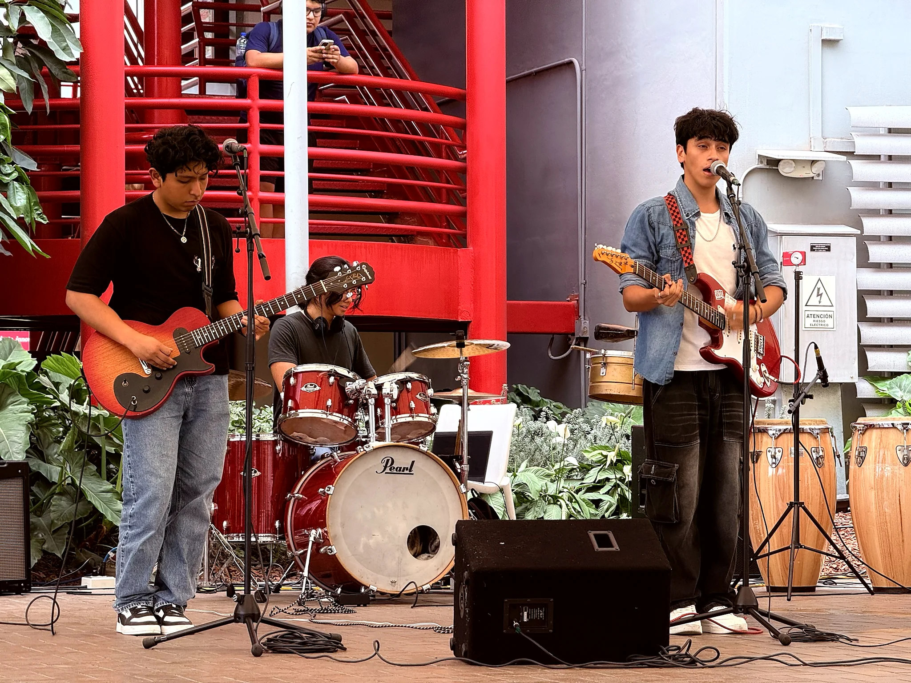
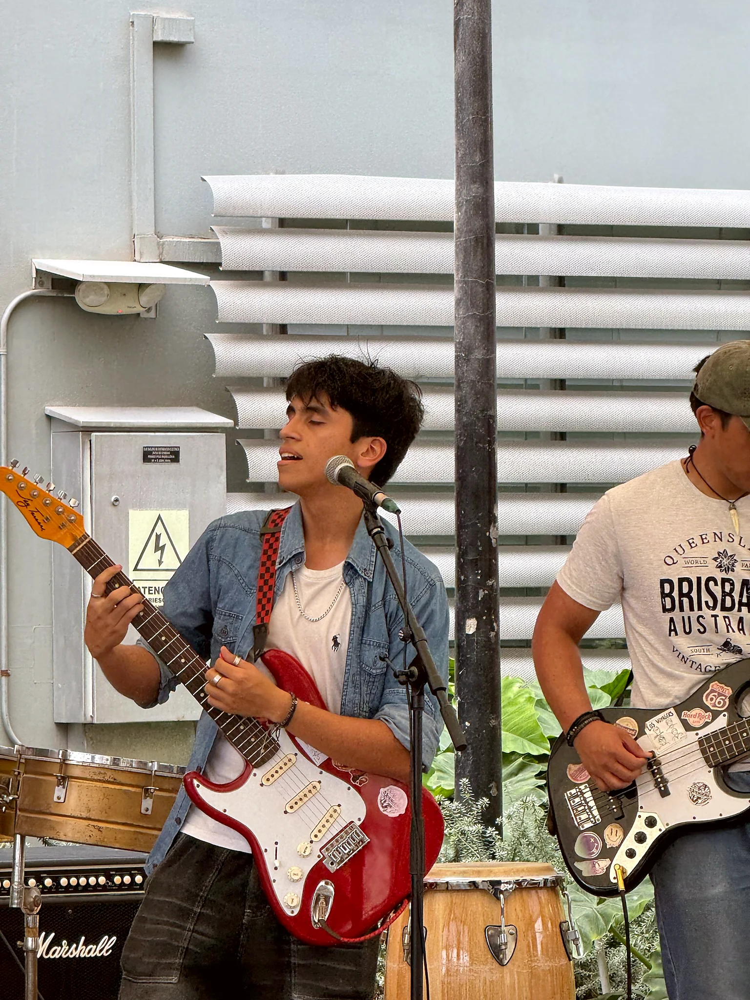
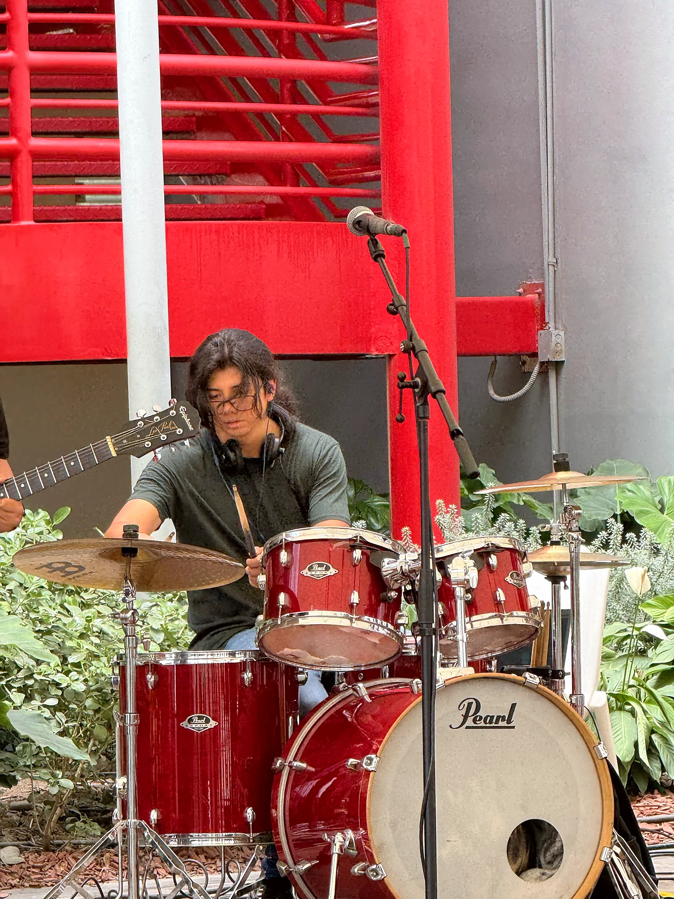

LosVoyagers
Rock alternativo desde Lima. Cada canción se ve como suena: elige una y mírala con su letra.
Con sonido · audífonos mejor
La letra termina aquí. Lo que sigue es la señal alejándose.
verso0:00 / 4:06136 BPM · La menor
Bitácora
Rock alternativo · Lima, Perú · desde 2023Los Voyagers son una banda de rock alternativo de Lima. Cuatro amigos que hacen canciones sobre irse lejos y volver. Sus singles «Vuelvo» (2025) y «Decidido» (2026) ya están en todas las plataformas.
Los Voyagers son John (voz y guitarra), Aarón (guitarra), Gustavo (bajo) y Diego (batería). Tocan juntos en Lima desde 2023 y hacen rock alternativo en español: guitarras al frente, canciones tristes que suenan fuerte.
El nombre viene de la Voyager 1, la sonda que se alejó tanto que ya no puede volver. Lo único que regresa a la Tierra es su señal. Con esa idea arman su primer EP, de cinco canciones, sobre perderse y volver.
En octubre de 2025 publican «Vuelvo», con videoclip, y en agosto de 2026 llega «Decidido». En 2026 pasaron por el Bar El Dragón de Barranco, la audición de Suena La Noche en Music Market y dos fechas en Lima en noviembre. Ahora terminan el EP y buscan escenarios para presentarlo.
- Voyager 1 · distancia a la Tierra
- 25 908 000 000 km
- Su señal tarda
- 24 h 00 min
- Los Voyagers en misión
- 1121 días
- Johnvoz y guitarra
- Aarónguitarra
- Gustavobajo
- Diegobatería
Imágenes recibidas
Kit de prensa · .zip







Libres para prensa citando a Los Voyagers.
Señales emitidas
Todo en Spotify ↗Sobrevuelos
Trayectoria desde el despegue · días de viaje entre paradasEn escena4 integrantes: voz y guitarra, guitarra eléctrica, bajo y batería
Rider y stage plotA pedido, por correo
BaseLima · listos para viajar
Abrir canal
A la Voyager 1 le toma un día-luz contestar. A nosotros, bastante menos.
booking@losvoyagers.pe